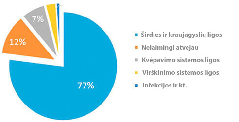
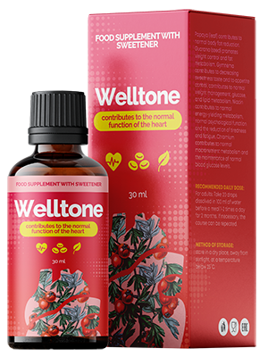

Statistika: kiekvienas trečias pilietis, vyresnis nei 35 m., miršta nuo hipertenzijos sukeltų ligų!
L. А. Bokerija: ”Aš asmeniškai 2020 pirmiems skaitytojams išsiųsiu priemonę nuo hipertenzijos su 50 proc. nuolaida“

Žinomas kardiochirurgas, medicininio mokslo organizatorius, profesorius.
Širdies ir kraujagyslių ligos yra pasaulio lyderiai tarp ligų pagal jų atimtų gyvybių skaičių. 94% infarktų ir insultų atsiranda būtent dėl padidėjusio kraujospūdžio. 89% atvejų hipertenzija, atsiradus infarktui ir insultui, baigiasi mirtimi. Kalbant apie konkrečias vertes, hipertenzija sukelia maždaug 77-78% mirtinų “natūralių” rezultatų. Absoliučiais skaičiais - tai apie 1,54 milijonų mirčių 2016 m.
”Mirtingumo priežastys 2016 m.”
Baisiausia yra tai, kad dauguma žmonių net neįtaria, kad turi hipertenziją. Remiantis statistika, 67% hipertenzija sergančių pacientų nežino sergą. Dalykas yra tas, kad slėgio šuoliai nėra rimtai vertinami, kol nepasireiškia hipertenzinė krizė, kai slėgis tampa per dideliu. Mažai kas atkreipia dėmesį į galvos skausmą, galvos svaigimą, silpnumą, veido patinimą, pernelyg dažną širdies plakimą, neryškų regėjimą, nervingumą. Tuo tarpu visi šie simptomai jau byloja apie lėtinę hipertenzijos eigą. Ir kad atėjo laikas skubiai imtis veiksmų, kol nebus per vėlu!
Šiai dienai yra vienintelė priemonė nuo hipertenzijos, kuri veikia ligos priežastį ir, laikantis instrukcija, visiškai pašalina hipertenziją. Tai yra vokiečių priemonė “”. Dalykas yra tas, kad priemonė “ visiškai atstato kraujagyslinį toną unikalios mokslinės formulės dėka. Be to, vaistas mažina cholesterolio kiekį ir normalizuoja širdies susitraukimų dažnį. Labai svarbu, kad “” ne tik efektyvus, bet ir saugus sveikatai, nes jį sudaro tik gamtiniai komponentai. Todėl “” galima vartoti bet kuriame amžiuje, nebijant jokio šalutinio poveikio ir kitų organų komplikacijų. Priemonės veiksmingumas ir saugumas įrodytas daugybe klinikinių tyrimų, kuriuose dalyvavo daugiau kaip 5000 žmonių.
Anksčiau “” nebuvo parduodamas visose šalyse, nepaisant to, kad aš asmeniškai turėjau ilgas derybas su gamintojais. Bet dabar pagaliau, "> “” galima įsigyti mūsų šalyje.
Buvo priimtas sprendimas panaikinti sankcijas, taikomas Europos vaistų nuo hipertenzijos importui

- Laba diena, ponia Čen. Ar galėtumėte papasakoti mums, kodėl priimtas toks sprendimas?
- Mūsų pagrindinis uždavinys yra palaikyti žmonių sveikatą visoje planetoje. Ir jei kažkur yra problema, mes privalome būtinai ją išspręsti. Deja, iš mūsų šalies atėjo nuvilianti statistika: daugiau nei 70% gyventojų serga hipertenzija, ir beveik kiekvienas trečias miršta nuo širdies ir kraujagyslių ligų. Šis rodiklis yra daug kartų didesnis nei Europoje.
- Tai tikrai baisus skaičius! Prašom pasakyti, kaip Europos Sąjungoje kovojama su hipertenzija?
— Šiuo metu visose Europos klinikose ir reabilitacijos centruose gaunama inovacinė priemonė ““, kurią sukūrė vokiečių mokslininkai. „“ ypatumas yra tas, kad ji neturi kontraindikacijų ir atstato kraujagysles ląstelių lygyje. Jis leidžia greitai normalizuoti kraujospūdį ir išvengti širdies ir kraujagyslių ligų vystymosi.

- Ponia Čen, ar tiesa, kad ši priemonė jau prieinama pas mus?
- Taip, aš kalbu būtent apie tai, kai sakau apie laikiną sankcijų, susijusių su Europos priemonių nuo hipertenzija importu, panaikinimo. Šis sprendimas buvo priimtas aukščiausiame lygyje, ir suderintas. Kai mes kalbame apie gyventojų sveikatą, jokie politiniai nesusipratimai neturi jokios reikšmės
- Pasakykite mums, kaip „“ veikia kūną?
- Remiantis Pasaulio sveikatos organizacijos tyrimais, priemonė ““ turi šiuos efektus:
- • kraujagysles atveda į toną;
- • mažina cholesterolio kiekį;
- • normalizuoja širdies ritmą.
Šiuo metu mes turime šią statistiką:
- atlikus širdies ir kraujagyslių ligų prevencija vyresniems nei 35 metų žmonėms su priemonės „“ pagalba, 97 proc. respondentų arterinis kraujospūdis normalizavosi
- - paskirus priemonę „“ atsistatymo po hipertenzinių krizių laikotarpiu, 86 proc. žmonių galvos smegenų kraujotaka pagerėjo.
- Ponia Čen, labai ačiū Jums už pasikalbėjimą! Tai tikrai puiki naujiena visiems Lietuvos žmonėms. Tikimės galėsią susidoroti su hipertenzija ir padidinti lietuvių vidutinę gyvenimo trukmę.
Komentarai